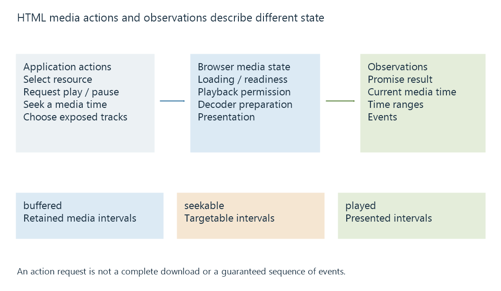

HTML media elements, state and time ranges
HTML audio and video elements expose media playback controls, asynchronous state and time ranges whose meanings distinguish resource loading from presentation readiness.
HTML's <video> and <audio> elements are the browser's interfaces for media playback. They expose controls, timing and state while the browser handles its supported decoding and presentation path.
An element can exist in the page before it has usable media. The distinction between requesting playback and being ready to present matters throughout its API.
A small element still has asynchronous work
This original example supplies a video resource and requests browser controls:
<video controls preload="metadata" playsinline>
<source src="/media/example.mp4" type="video/mp4">
</video>
controls asks for the browser's player controls. preload="metadata" expresses a loading preference; it is not a guarantee that exactly a fixed number of bytes will be fetched. playsinline encourages presentation within the element's area and does not add codec support.
The browser still needs to select and access the source, interpret its format, initialize the required media path and prepare presentation.

A scripted play() request returns a promise. Code can respond to its resolution or rejection and keep the visible controls consistent with the result. The promise is associated with starting playback, not with obtaining a permanent complete copy of the resource.
Three range properties answer different questions
A media element exposes normalized time ranges for several observations:
| Property | Question answered |
|---|---|
| buffered | Which media-time intervals are currently retained as buffered data? |
| seekable | Which intervals can currently be targeted by seeking? |
| played | Which intervals have been played? |
An on-demand resource can be seekable across much of its duration while only a small portion is buffered. A live resource can have a moving seekable window. The ranges can also have gaps.
Consider an original snapshot:
currentTime: 8
buffered: [0, 10] and [40, 60]
seekable: [0, 120]
played: [0, 8]
The immediate buffered interval ends at ten, leaving two seconds before its next gap. Summing the buffered intervals gives thirty stored media seconds, while subtracting the playhead from the last buffered end gives fifty-two. Those latter calculations answer different questions.
A seek to fifty can land in another buffered interval. A seek to ninety can still be allowed by the seekable range while requiring retrieval and preparation of additional data.
Readiness is different from network activity
The element's network state concerns resource loading. Its readiness state concerns how much usable media information exists around the current position.
Loaded metadata can establish properties such as dimensions or duration when available. It does not mean a future picture is already ready. Download activity can continue while presentation proceeds, and a player can consume buffered media while making no new request.
Events expose changes in those states, not a fixed universal story for every source. For example, waiting identifies a presentation wait related to readiness, while ended belongs to reaching the playback end under the relevant state. A stalled live publication and a completed resource have different contexts for interpretation.
The media clock is a programme coordinate
currentTime is a position on the media timeline. It is not the elapsed wall time since the user pressed Play. Pausing, seeking and playback-rate changes separate those values further.
A browser can also report picture-presentation counters through a separate interface. Those counters relate to dropped video frames, rather than to the sum of played intervals.
See Also
- Browser media playback and its loading paths
- Media Source Extensions (MSE) and scripted media delivery
- Browser autoplay restrictions and playback permission
- Buffering, ready media and playback reserve
- Seeking during streaming
- Dropped video frames during playback